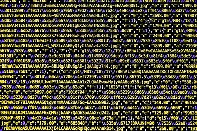

beweeg de muis over de button om het dropdown menu te openen
programmeertalen en compilers vormen de basis van softwareontwikkeling en zijn cruciaal voor het bouwen van allerlei soorten software, van mobiele apps tot besturingssystemen tot webtoepassingen. Het kiezen van de juiste programmeertaal en het begrijpen van de werking van compilers zijn belangrijke vaardigheden voor programmeurs en ontwikkelaars.
Toepassingsprogramma's, ook wel apps genoemd, zijn softwaretoepassingen ontworpen voor specifieke taken of doeleinden. Ze omvatten tekstverwerkers, spreadsheets, webbrowsers, fotobewerkingssoftware, videogames en meer. Deze programma's maken gebruik van de functionaliteit van een besturingssysteem om gebruikersproductiviteit te verbeteren, entertainment te bieden en specifieke taken uit te voeren op computers en mobiele apparaten. Het toepassingprogamma zit in de toepassingslaag van je apparaat.
Databases zijn gestructureerde verzamelingen van gegevens die efficiënte opslag, beheer en ophalen van informatie mogelijk maken. Ze worden gebruikt in bedrijven, websites en softwaretoepassingen om gegevens zoals klantinformatie, inventaris, financiën en meer te organiseren, op te slaan en te analyseren voor besluitvorming en operationele processen.
